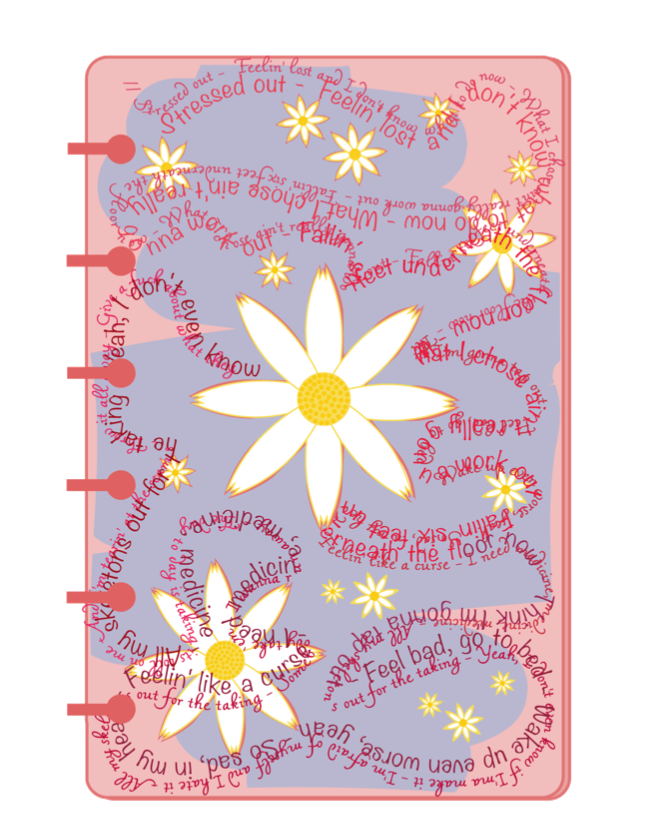

Coding Portolfio
It was personally difficult to find things to do with friends and/or family that did not involve drinking or clubbing between the awkward age range of 18-21. There are other apps that show users events like the one I am building, however, this project is directed to help make it more accessible for users that are not interested in 18+ events or events solely in major cities like New York or Miami. I am using HTML, CSS, and React.js for the front end and Node.js, Express.js and PostgreSQL for the backend. I created mockups in Figma before starting to implement it.
As a team of 3, we implemented a Java program that generated either a compliment, advice, or a motivational quote depending on what the user wanted to generate. Individually, I created the simple graphical user interface (GUI) which consisted of buttons and a text field for output. This was my first ever hackathon that was hosted virtually because of the COVID-19 situation.
During the winternship, I was put in a group of 2 to work on a database from Kaggle called Bus Lines in NYC. We conducted data analyses based on data sets and applied machine learning for predictions using Python. This was our first time learning and implementing Python in Google Collaboratory. We had also created visualization for bus routes and predicted buses based on the bus arrival and accuracy using matplotlib, seaborn, and geopandas.

Art Portfolio
Self Portrait:
When I see myself, I see my imperfections and I wanted to
overcome my lack of confidence. I made sure that I shown my
pores and blackheads, my uneven eyebrows and almond eyes. I was
inspired by Frida Kahlo because she would not be considered as
the typical beauty standards nowadays. It inspired me knowing
that one’s imperfections shouldn’t matter to others.
(Created with Adobe Illustrator)
Personal Logo:
I consider myself a techie as well as a down-to-Earth person. I
believe these two items represent who I am- a phone as well as
my favorite hobby, yarn knitting. I have added a yellow gradiant
hexagon in the back to combine the two items together.
(Created with Adobe Illustrator)
Surrealism:
I wanted to have fun and create something weird. I have decided
to merge a woman and a starfish. The image is inspired by the
pink starfish in the Pixar animation called “Finding Nemo”.
(Created with Adobe Photoshop)
Haiku:
Haikus were originally supposed to be about nature; so I decided
to follow that tradition. My haiku is about warm weather
transitioning to colder weather.
(Created with Adobe Illustrator)
Poetry as a Building:
The picture is based on a song called “Tango” by Abir. The empty
space is where the woman’s partner is supposed to be. However, I
have replaced the partner with the lyrics of “Tango”. The song
is all about being independent- not needing to rely on someone
else.
(Created with Adobe Photoshop)
The Health Triangle:
This is a 3 set part of my Digital Art class's final project. I took this class in Fall 2020 during the COVID-19 Pandemic. I decided to work my project around the health triangle, which consists of 3 elements- physical, mental, and social health since it was super important for me during the pandemic.
Physical Triangle
For the physical part I have decided to create an apartment
complex since we live in the city. Many people have done
amazing things just by being at home.
For the top half of the building, I have decided to create
windows showcasing a bookshelf, a cat, and a kitchen. The
bookshelf represented how many people have been reading more
about the pandemic and even reading as a hobby. The cat is a
representation of how families can give their pets more care
and attention now that they are home with them. If a person
was living alone, they would have a pet to keep them company
during isolation. The last window of the top half of the
building is the kitchen. Many people have been cooking food
and baking sweets at home which can be more healthy than
ordering take-out.
In the bottom half of the apartment building, we have a window
showcasing an office room. In quarantine, many people have
lost their jobs, however, the ones who have kept their jobs,
may have been working at home virtually. The next window has a
workoutroom with a treadmill because many people have also
been work- ing out more to stay productive and in shape while
at home. The last window has an easel with an empty canvas and
some paint. I think people have been more artistically
inclined since the beginning of the pandemic. I personally
have tried to focus more on myself by making collages and
designing websites.
Mental Triangle
When I created this journal page, I was listening to this song called “Skeletons” by Keshi. I was listening to the lyrics and it resonated with me about how I was feeling during quarantine. I have decided to make a chamomile flower because chamomile tea is well known for calming nerves. I wanted to combine the lyrics and these chamomile flowers into the journal page. The words in the song are scrambled around the page because that is how I think the situation and my emotional states were- very jumbled and messy.
